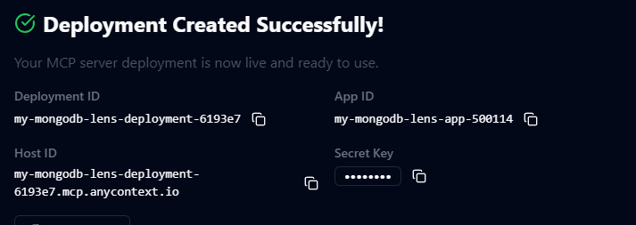
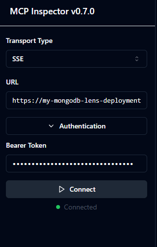
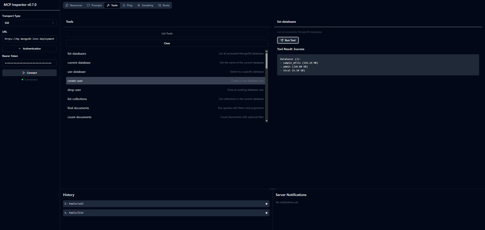

Debugging with MCP Inspector
MCP Inspector is an open-source tool for testing and debugging MCP servers. This tutorial will show you how to install MCP inspector and connect to an MCP server hosted on AnyContext.
Installing MCP Inspector
- The recommended way to install MCP inspector is using npm. If you havent already got node and npm installed, you can follow the guide from here.
- Open a terminal, and run the command:
npx @modelcontextprotocol/inspector. On success, you will see an output like this:Starting MCP inspector... Proxy server listening on port 3000 🔍 MCP Inspector is up and running at http://localhost:5173 🚀
Inspecting an MCP server
-
Find the secret key belonging to the app you created in AnyContext with the MCP server deployment you wish to inspect. Also take note of the MCP server URL.

-
Open a browser and navigate to
http://localhost:5173 -
Choose SSE transport, and fill in the URL and secret key (bearer token) in the connection settings.

-
After clicking connect, you can now navigate through all tools, resources, etc. that the the MCP server exposes.
